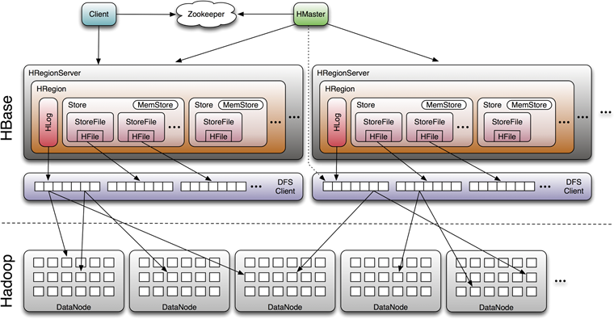

6.2.4. LSM树¶
Google构建为开源项目Log Structured Merge Tree
lsm树存储引擎和b树存储引擎，一样支持，增删改查，也支持顺序扫描操作。LSM牺牲了读性能，提高写性能。
LSM的原理:
将对数据的修改增量保存在内存中，达到指定大小限制之后批量把数据flush到磁盘中 磁盘中树定期可以做merge操作，合并成一棵大树，以优化读性能 不过读取的时候稍微麻烦一些，读取时看这些数据在内存中，如果未能命中内存，则需要访问较多的磁盘文件 极端的说，基于LSM树实现的hbase写性能比mysql高了一个数量级，读性能却低了一个数量级 LSM树原理把一颗大叔拆分成N颗小树，它首先在内存中，它首先写入内存中，随着小树越来越大 内存中的小树会flush到磁盘中，磁盘中的树定期可以做merge操作，合并成为一个大树，用来优化读性能
hbase存储设计的重要思想:

磁盘读取数据是以盘块(block)为基本单位的。位于同一盘块中的所有数据都能被一次性全部读取出来。而磁盘IO代价主要花费在查找时间Ts上(即寻道上)。因此我们应该尽量将相关信息存放在同一盘块，同一磁道中。或者至少放在同一柱面或相邻柱面上，以求在读/写信息时尽量减少磁头来回移动的次数，避免过多的查找时间Ts。
Note
它的核心思路其实非常简单，就是假定内存足够大，因此不需要每次有数据更新就必须将数据写入到磁盘中，而可以先将最新的数据驻留在内存中，等到积累到最后多之后，再使用归并排序的方式将内存内的数据合并追加到磁盘队尾(因为所有待排序的树都是有序的，可以通过合并排序的方式快速合并到一起)。
LSM具有批量特性，存储延迟。当写读比例很大的时候（写比读多），LSM树相比于B树有更好的性能